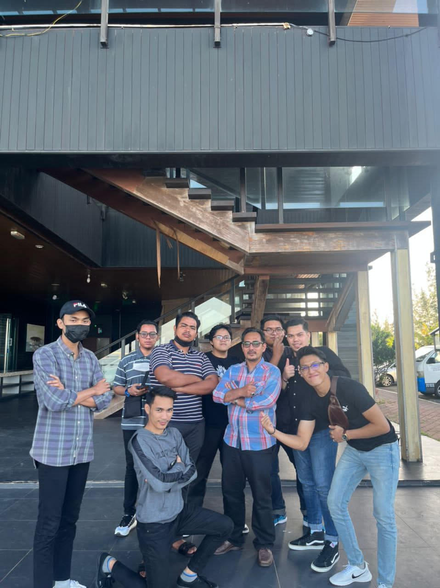
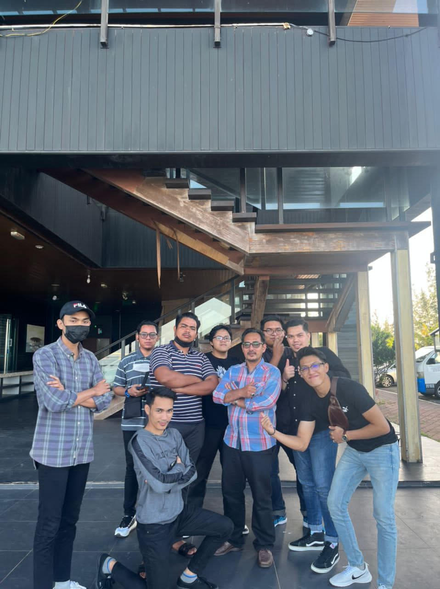

POLITEKNIK HULU TERENGGANU(DIPLOMA ERA)
After SPM,I went to Politeknik Hulu Terengganu and took Diploma in Tourism Management.I spend around 3 years there which is 2019-2021.my time at there was a transformative experience that shaped my personal and professional growth.Balancing a challenging academic program with a thriving social life allowed me to develop critical thinking abilities and form long-lasting friendships.I graduated with the CGPA 3.42 and i feel thankful for all my lecturers,friends that i make during my time there.Below are some of memories during my time at Politeknik Hulu Terengganu
 
